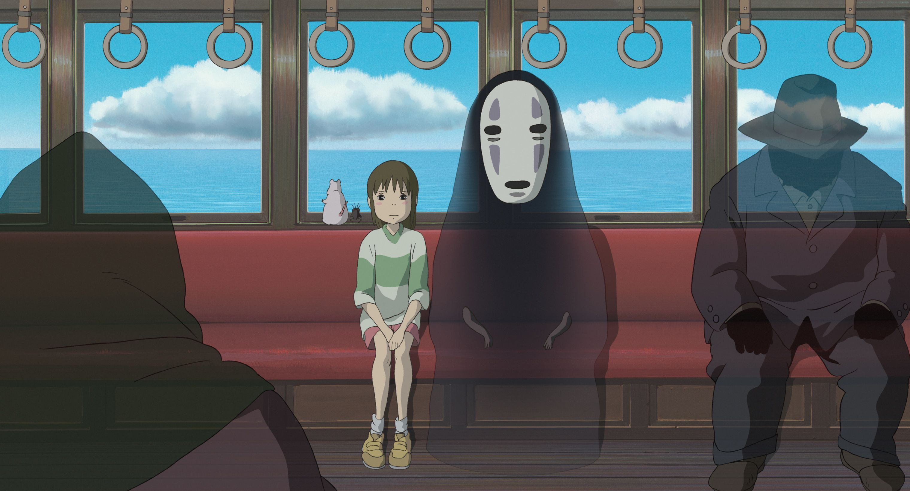

Este es un estudio japonés de animación fundado el 15 de junio de 1985 por los directores Hayao Miyazaki, Isao Takahata y el productor Toshio Suzuki. Reconocido por la calidad de su animación, ha realizado más de 20 películas a lo largo de los años. En este sitio podrás encontrar alguna de sus películas.

Un ejemplo de las peliculas más reconocidas del estudio. Estrenada el 20 de julio 2001